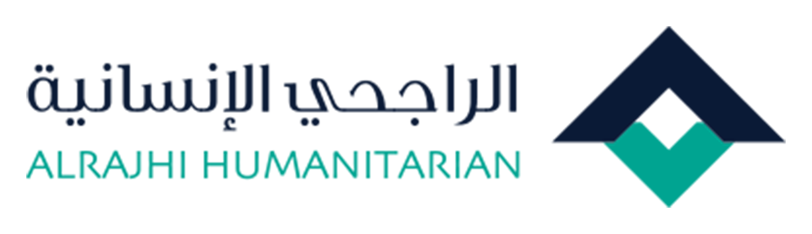
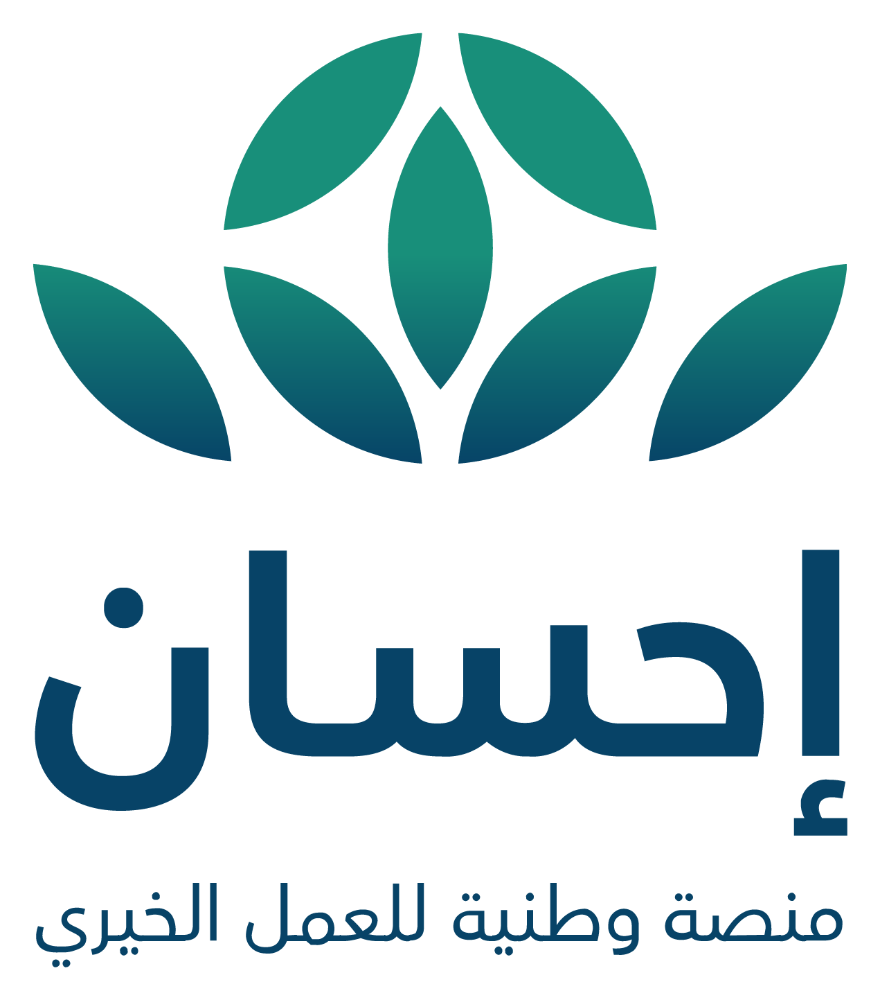
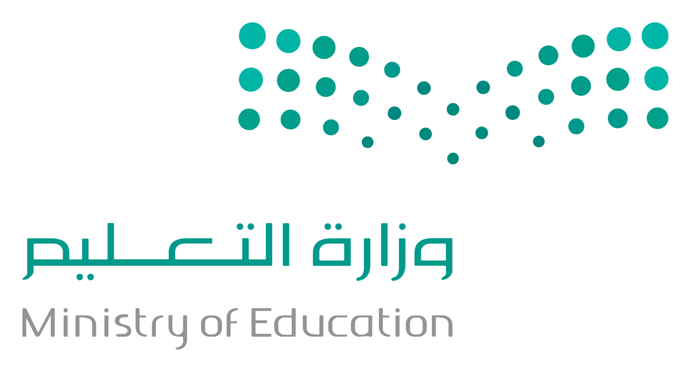

نبني الاستقرار
ونمكّن الأسر لحياة كريمة
حلول سكنية مستدامة للأسر الأشد احتياجًا عبر مشاريع إسكان، مبادرات ترميم، وبرامج تمكين أسري تعزّز جودة الحياة.
حلول سكنية مستدامة للأسر الأشد احتياجًا عبر مشاريع إسكان، مبادرات ترميم، وبرامج تمكين أسري تعزّز جودة الحياة.
برامج ترميم شاملة بإشراف هندسي ومعايير سلامة دقيقة لإعادة الكرامة والاستقرار لأسر تنتظر مأوى يليق بها.
نوفّر بيئة سكنية ممكّنة مع برامج تأهيل وإرشاد وتدريب مهني، ليتحوّل المسكن إلى منصة انطلاق نحو الاكتفاء.
نتعاون مع الجهات الحكومية والقطاع الخاص لبناء منظومة إسكانية متكاملة قائمة على الحوكمة والقياس والأثر.
نمنح كل أسرة سعودية سكنًا يليق بإنسانيتها، عبر برامج تنمية وإسكان متكاملة تجمع بين دفء العطاء وانضباط المؤسسة.
تمكين الأسر السعودية من سكن مستقر يرعى كرامتها.
الريادة في حلول الإسكان التنموي بما يتسق مع رؤية 2030.
الشفافية، الكرامة، الإتقان، الشراكة، والاستدامة.
13 منطقة عبر شبكة فروع وشركاء معتمدين.
خمس ركائز استراتيجية نعمل من خلالها لتحقيق أثر مستدام في حياة المستفيدين.
برامج تأهيل وتدريب وتمويل صغير لتحويل الأسر من الاحتياج إلى الإنتاج.
تغطية تكاليف العلاج والأدوية والمستلزمات للحالات المستحقة.
منح دراسية ولوازم مدرسية لطلاب الأسر المتعفّفة في جميع المراحل.
ترميم وتأهيل المساكن وتأمين الإيجارات للأسر الأشد حاجة.
تطبيق أعلى معايير الإفصاح والامتثال لتعزيز ثقة المتبرعين والشركاء.
أربع ركائز نعمل من خلالها لتمكين الأسرة السعودية من حياة كريمة ومستقرة، ابتداءً من السكن وصولًا إلى الاستقلال المالي.
ترميم وتأهيل المساكن، تأمين الإيجارات، وتسليم وحدات سكنية جاهزة للأسر الأشد حاجة وفق معايير جودة موثّقة.
إصلاح الأعطال الجوهرية وتأهيل المنازل القديمة لتصبح آمنة وصحية للسكن.
اعرف المزيدإرشاد أسري، تدريب على المهارات، ومشاريع أسر منتجة تنقل الأسرة من الاحتياج إلى الإنتاج.
اعرف المزيدمنح دراسية، لوازم مدرسية، ودروس تقوية لأبناء الأسر المستفيدة من برامج الإسكان.
اعرف المزيدتغطية تكاليف العلاج، الأدوية، والأجهزة الطبية للحالات المستحقة في الأسر المسجّلة.
اعرف المزيدبرامج ميدانية موثّقة، يتم تنفيذها وفق معايير جودة وشفافية مع متابعة دقيقة لنسبة الإنجاز.
توفير أدوية الأمراض المزمنة لـ 1,200 مريض شهريًا في 5 مناطق رئيسية.
عرض المشروعفرص دعم مفتوحة ومحدّثة مع متابعة شفافة لنسبة الإنجاز.

قراءة موحّدة وموثّقة لأبرز مخرجات الجمعية خلال العام الجاري، تعكس انضباط الإجراءات وعمق الأثر.
النظام الأساسي ولوائح الحوكمة
قوائم مالية مدقّقة لكل عام
السير الذاتية والاجتماعات
قرارات وتوصيات الاجتماعات
إنجازات الجمعية وأبرز مؤشراتها
محاضر معتمدة ومحدّثة
قناة آمنة وسرّية للإبلاغ عن أي مخالفة أو ملاحظة
تغطيات وتقارير ومحتوى مرئي يوثّق رحلة العطاء وأبرز فعاليات الجمعية.
وجدت في جمعية إسكان يدًا تحفظ كرامتي، وأسلوبًا راقيًا في تقديم الخدمة جعلني أشعر بالأمان.
تجربتي في التطوع مع سَنَد علّمتني معنى العطاء المنظّم؛ فالإجراءات واضحة والأثر ملموس.
شفافية الجمعية في الإفصاح والتقارير المالية جعلتها شريكًا موثوقًا لبرامج المسؤولية الاجتماعية لدينا.









تبرّعك ووقتك يصنعان فرقًا حقيقيًا في حياة أسرة تنتظر مأوى يحفظ كرامتها. انضم لرحلة العطاء المؤسسي معنا.